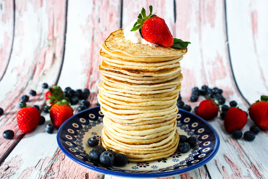

Buttermilk Pancakes Recipe
Home

Description
Nothing says morning comfort quite like good buttermilk pancakes... and these are among the best!
Super light and super flavorful, these thin pancakes stack up nicely. They have a tart buttermilk flavor with a hint of sweetness.
They're definitely thinner than a traditional pancake but thicker than a crepe.
Serve with some fruit and whipped cream or maple syrup for a morning delight.
If you have a griddle, they cook well on that which makes the cooking process a snap.
Ingredients
- 1 quart buttermilk
- 4 large eggs
- 1/2 cup sugar
- 2 cups all-purpose flour
- 1/4 cup olive oil
- A dash of salt
Steps

- Mix all ingredients together well

- Heat a skillet with a thin coat of oil

- Once heated, pour about a 2-inch size circle of batter (pancakes are thin, almost crepe-like)

- After pancakes looked cooked along the edges, flip

- Finish cooking on the other side. Add oil to skillet as needed

- Continue until all batter is used. Enjoy with your favorite pancake topping
- NOTE: After cooked, if you have leftovers, they freeze well. Just make sure to place a piece of wax paper between each pancake.